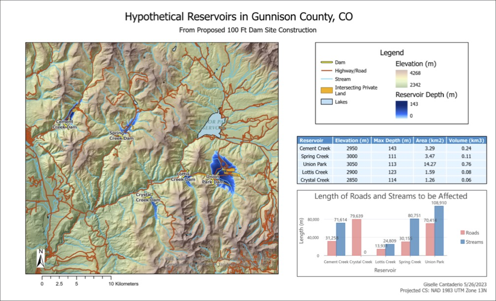
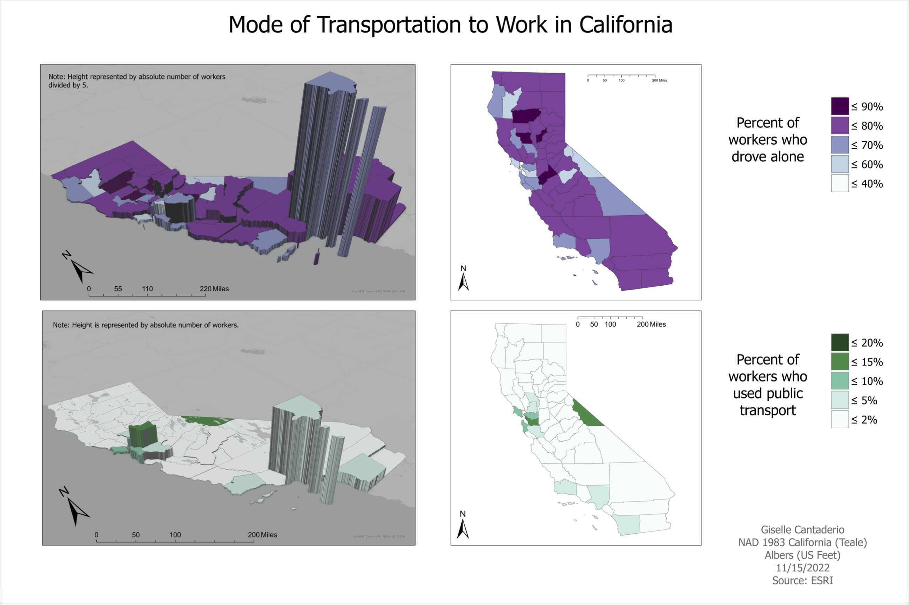
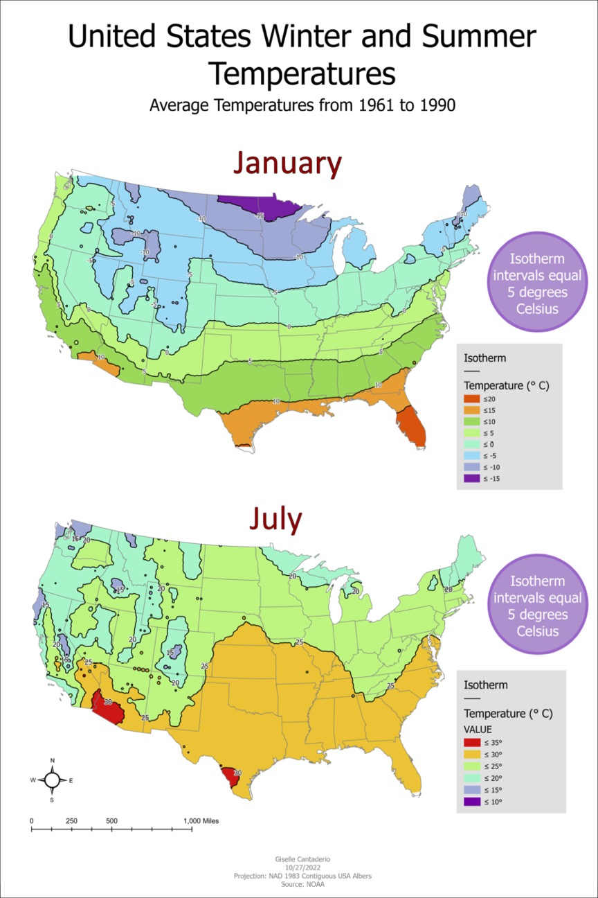
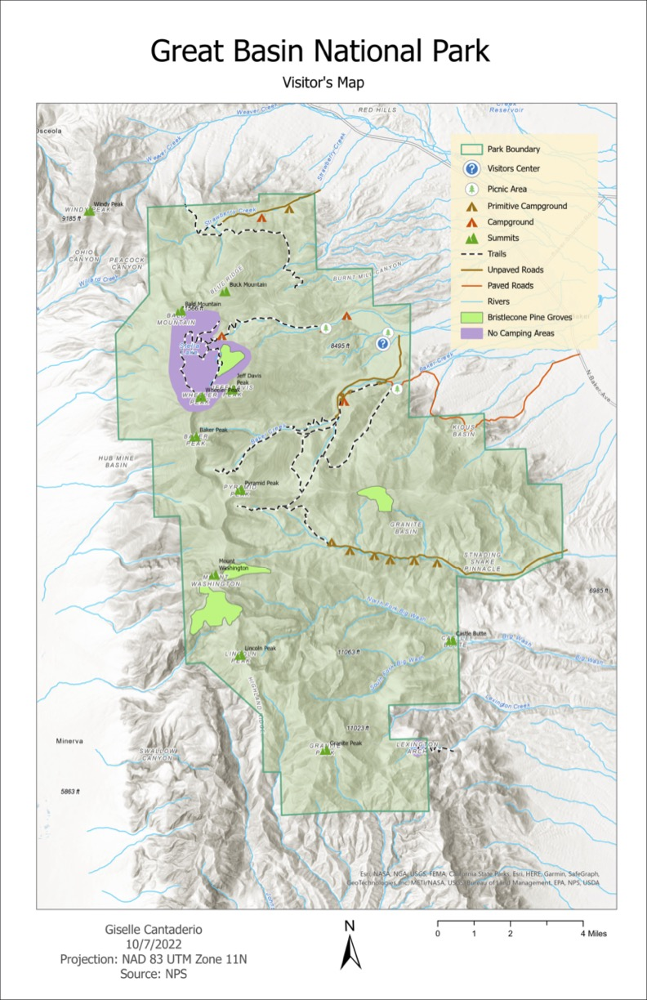
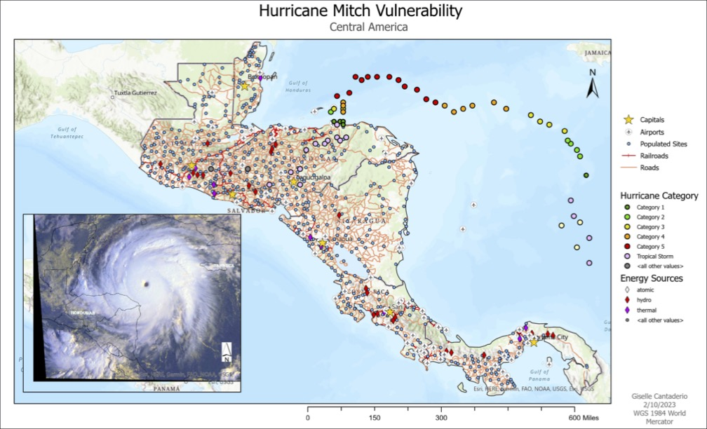
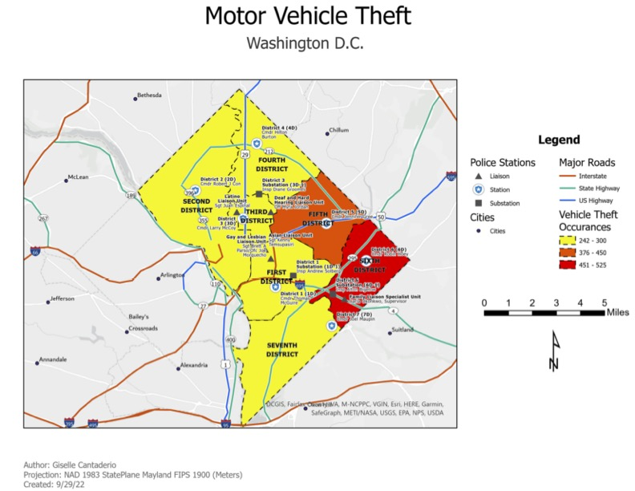
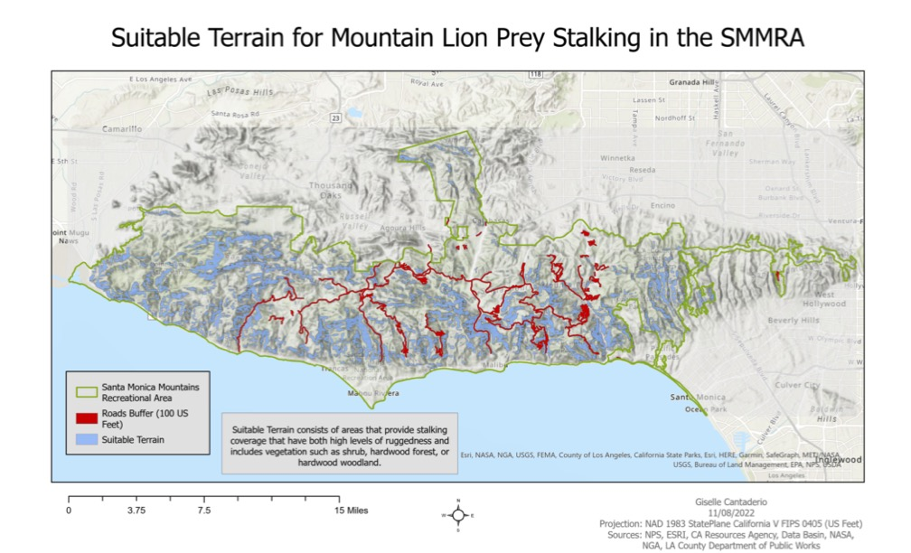

Graduate and Aspiring Geospatial Professional
Site is currently under construction. Please stay tuned for updates!
Hi, I'm Giselle. I'm passionate about Geographic Information Systems (GIS) and the ways spatial data can be used to better understand and solve real-world problems. Through my academic studies and independent projects, I've developed experience with ArcGIS Pro, QGIS, cartography, spatial analysis, and geospatial data management. I enjoy working with maps, analyzing spatial patterns, and communicating information through geospatial visualization. I also have an interest in remote sensing and the use of aerial and satellite imagery as complementary tools for spatial analysis. This portfolio showcases projects that highlight my technical skills, analytical thinking, and continued growth within the geospatial field. As I continue expanding my GIS knowledge and experience, I am seeking opportunities to contribute to meaningful geospatial projects while growing as a GIS professional.


Use of NOAA’s U.S. Climate Normals data for the 30 year period of 1961 - 1990 to create isotherm maps illustrating and comparing winter (January) to summer (July) temperatures in the lower 48 United States.

Uses ACS Transportation to Work Variables dataset by ESRI to visualize and compare modes of transportation to work, in this case driving alone vs using public transportation.

This project involved geo-referencing a national park map JPEG and digitizing features to re-create a visitor’s map guide.


